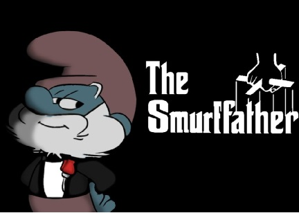

Наков е вманиячен в превземането на Тръняка шарп, замък който е обитаван от неговия заклет враг Джагерица. Джагерица разполагал с добър дизайнер, който обградил целия замък с купища капани. Робите на Наков давали жертва след жертва но успех нямало, Джагерица даже не го интересувало какво се случва в двора му. След 518 години война успеха бил мираж. Наков бил останал само с тримата си генерали Христоско, Наед и Яна от запаса.